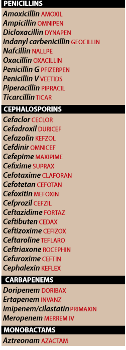
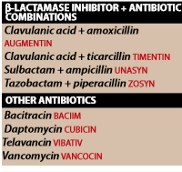
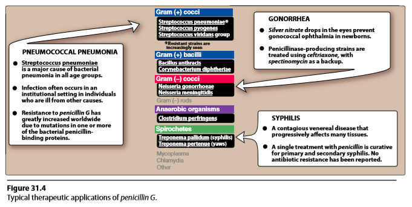
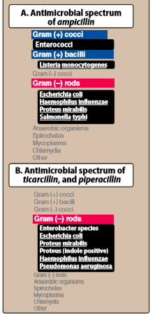
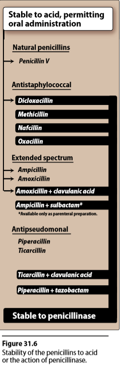
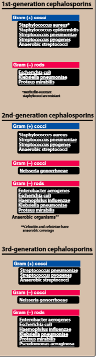
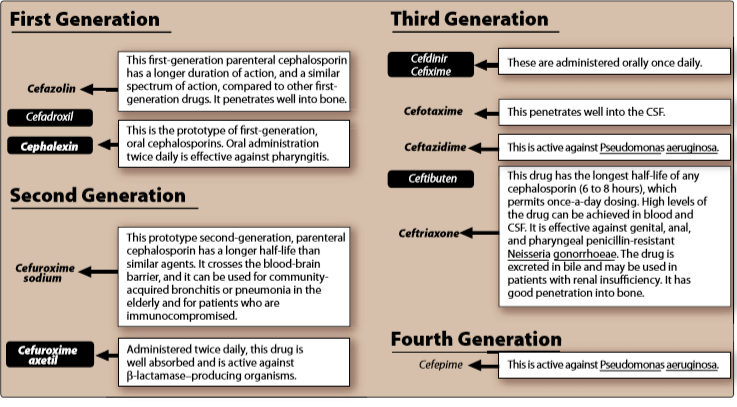
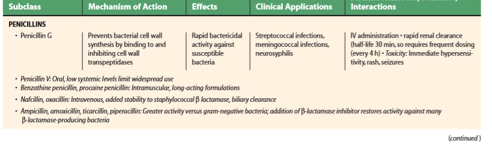
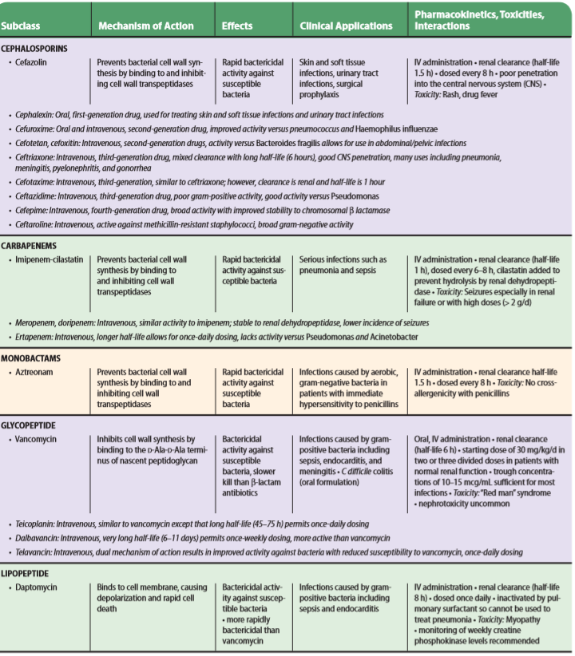

7. Beta-lactame antibiotics, peptide antibiotics
Beta-lactame antibiotics:


OVERVIEW:
→ interfere with the synthesis of bacterial wall
→ they have no effect on bacteria thar are not growning and dividing
→ named after the β-lactam ring that is essential to their activity
PENICILLINS:
→ widely effective and less toxic but ↑ resistance
→ differ from an to another in the R substituent attached to 6-aminopenicillianic acid
→ the nature of side chain affect:
- antimicrobial spectrum
- stability to stomach acid
- corss-hypersensitiviy
- susceptibility to bacterial degradative enzymes(β-lactamase)
A.Mechanism of Action:
→ last step of bacterial wall synthesis (transpeptidation or cross-linkage) → osmotically less stable membrance
- osmotic pressure
- autolysins
→ sucess due to — antibiotic size,charge and hydrophobicity
1.Penicillin-binding proteins:(PBPs)
→ bacterial enzymes involved in the synthesis (maintain of morphology)
→ mediate peptidoglycan biosynthesis
→ catalyze final transpeptidase reaction
2.Inhibition of transpeptidase
→ catalyze formation of the corss-linkage between peptidoglycan chains
→ Penicillins inhibit this transpeptidase-catalyzed reaction
3.Production of autolysisn:
→ G+ cooci → produce degradative enzymes (autolysins) → normal remodelin of bacterial cell wall
→ when inhibited procced in the absence of cell wall synthesis
→ thus inhibition of cell wall synthesis+ destruction of existing cell wall by autolysins..
B.Antibacterial spectrum:
→ determined by their ability to cross the bacterial peptidoglycan cell wall to reach PBPs
→ G+ easily traversed by penicillins
→ G- have plus a lipopolysaccharide membrane(envelope) → barrier to water soluble penicillins
→ also has porins to permit the transmembrane entry
1.Natural Penicillins
→ antistaphylococcal → obtained by the fermentation of the mold Penicillum chyrsogenum
→ Ampicillin called semi-synthetic because it differs in the R groups attached to 6-aminopenicillanic acid nuclus
→ Penicillin G(benzylpenicillin) → number of gram-positive and gram-negative cocci, gram-positive bacilli, and spirochete
→ Penicillins are susceptible to inactivation by β-lactamases (penicillinases
→ Penicillin V → same spectrum as PG
- poor absorption
- more acidic stable from PG and often employed orally
- 
2.Antistaphylococcal penicillins
→ Methicilin / Nafcillin / Oxacillin / Dicloxacillin
- penicilliase-resistance penicillins
- infections produced by penicillase producing bacteria (S.Aureus)
- no activity against G-
3.Extended-spectrum penicillins:
→ Ampicillin / Amoxicillin
- spectrum similar to Pen G but ↑ effective against G-
→ widely used for repsipratory infenctions
- resistance to these antibiotics is a major clinical problem(inactivation of plasmid-mediated pencillinases)
- [Escheria coli and Haemophilus influenzae are frequently resistant]
their antimicrobial spectrum.

4.Antipseudomonal penicillin:
→ Carbenicillin / Ticarcillin and Piperacillin//
- are called antipseudomonal penicillins because their activity against Pseudomonas aeruginosa
→ effective against many G- bacili
→ Titracillin or piperacililn with clavulanic acid or tazobactam extends spectrum to inlucde penicillase-producing organisms

5.Penicillins and aminoglycosides
→ b-lactam antibiotics synergistic with aminolgycosides
→ can faciliate the entry of other antibiotics that might not ordinarily gain access to intracellurlar target sites.
→ enchanced antibicrobial activity
[never placed in the same fluid because they prolong contact → + charged aminoglycosides form inactive complex with - charged penicillins]
C.RESISTANCE
→ natural resistance to penicillins occurs in organism that either
- lack peptidoglycan cell wall (mycoplasma)
- impermable cell walls to the drugs
- due to asquisition of a plasmid that encodes resistance to multiple agents → ↑ disemination of the reistance genes
1.β-lactamase activity:
→ enzymes hydrolyzes the cyclic amide bond of b-lactam ring → loss of bactericidal activity
- major cause of resistance
- some b-lactams are poor substrates → resist hydrolysis
[certain organims may have chromosome-associated b-lactamases that are inducible b-lactam antibiots[2nd and 3rd cephalosporits]
→ G+ secrete β-lactamases extracellulary
→ G- on periplasmatic space between the inner and outer membranes
2.Decreased permability to the drug
→ ↓ penetration of the antibiotic though the outer cell membrane of bacteria prevents the drug from reaching the PBPs
→ presence of efflux pump can also reducce the drug intracellulary (cytoplasmic and periplasmic protein components which transport the b-lactam antibiotic acrros the outer membrane)
3.Alerted PBPs
→ modified PBPs have lower affinity of b-lactam antibiotics required clinically unattainable concentrations of the drug in order to be effective against bacterial growth
→ e.g. methicillin resistance in staphylococci and penicillin resistance to pneumonococci and enterococci
Pharmacokinetics
1.Administration
→ determined by the stability of the drug to gastric acid and by the severity of the infeciton.
a.Routes of Admn.
→ Ticarcillin, piperacillin and the combinations → must be administered intravenously (IV) or intramuscularly (IM)
→ Penicillin V, amoxicillin, and amoxicillin combined with clavulanic acid → available only as oral preparations
- Others are effective by the oral, IV, or IM routes (31.6 figure above)
b.Depot forms
→ Procaine penicillin G and benzathine penicillin G are administered IM and serve as depot forms
- slowly absorbed into the circulation → persist at low levels over a long time period.
2.Absorption:
→ most Pen are incompletely absorbed after oral amdmn. → reach intestine in sufficient amounts to affect the composition of intestine flora.
- not appropriate for treatment of Shigella or Salmonella
- because gastric acid emptying lenghting and the drugs are destroyed in the acidic enviroment of the stomach)
- 30 to 60 min before meal
3.Distribution
→ distribute well throughout the body
→ all penicillins corss placental barrier but noone has shown teratogenicity
→ bone marrow and CFS penetration is insufficient if the site is not inflammed
- inflammed meninges are more permable to penicillin,permiting rapid penetration to the CNS,as infection abates,subsites and permability barrieres re-estabilished]
4.Metabolism
→ usually insignificant but some Pen G shown to occur in patient with renal impairment (dosage regiemns adjusted)
5.Excretion:
→ primary route through the organic acid (tubular) secretory system of the kindeys & glomular filtration
→ half-life of Pen G can ↑ with renal dysfunction
→ Probenecid inhibit the secration of penicillin by competing the tubular secretion via the organic acid transporter → ↑ blood levels
→ Nafcillin,dicloxiacillin and Oxacillin are exception to the rule and are not eliminated by the kidneys
→ excreted into breast milk
E.Adversed reactions
1.Hypersensitivity
→ most important adverse effect
→ majro antigenic determinant of pen hypersensitivity is it's metabolite penicillioc acid → reacts with proteins and serves as a hapten to cause immune reaction
- maculopapular rash (Ampicillin)
- angiodema (swelling of lips,tongue...)
- anaphylaxis
→ safety determination noted by patient severity history
2.Diarhhea
→ disruption of the normal balance of intenstinal microorganisms
- occurs greatly with agents which have incomplete absorption or extended-spectrum
→ particulary Methicillin have the potential [no longer available]
4.Neuphrotoxicity
→ irritating neuronal tissue → seizures if injected intrathecally or ↑ lvl blood
- epileptic patients are on risk
→ ↓ coagulation with high dosage of Piperacillin ,Titracillin and Nafcillin
- concern patients with predisposed to uremics or anticoagulants
- → cytopenias occur often after 2 weeks of therapy
→ admin. as salts (sodium/sulphate forms)
- e.g. sodium excess → hypokalemia
CEPHALOSPROINS
OVERVIEW:
→ β-lactam antibiotics
- closely related structually functionally mode of action to penicillins resistance mechanims
- by t he attachment of side chains to 7-aminocephalosporanic acid
A.ANTI-BACTERIAL SPECTRUM
→ clasisfied into 3 generations
- based on their bacterial susceptibility patterns and resistance to b-lactamase
1. 1st Generation:
→ act as penicilins G subtitues
→ resistant to
- Staphylococcal penicillinase and effective against — Proteus mirabilis — E.coli — Klebsiella pneumoniae
→greater activity against three additional G-
- H.influenzae — Enterobacter aerogenes and some — Neissera species
3. 3rd Generation:
→ important role to infectious diseases
→ enchanced activity against G- bacilis(mentioned above) + other enteric organisms — Serratia,marcescens
→ Ceftazidime has activity against P.aeruginosa
→ Ceftriaxone and Cefotaxime has become drug of choise in the treament of meningitis
→ must be used with caution as they are associated with "collateral damage (induction & spread of antimicrobial resistance)
4. 4th Generation
→ admin. parentally
→ Cefepime has a wide antibacterial spectrum against — streptococci — Enterobacterial species — E.coli — K.pneumonieae — P.mirabilis — P.aeruginosa

B.RESISTANCE
→ Essentially same with penicillin
→ are not susceotible to hydrolysis by the staphylococcal penicillase.
- might be susceptible to extended spectrum b-lactamases(ESBLs)
- E.coli and K.pneumoniae are particurly assosciated with ESBLs
C. PHARMACOKINETICS
- 
1.Administration
→ IV or IM becuase their poor oral absorption
2.Distribution
→ distribute very well into body fluids
→ Ceftriaxone or Cefotaxime is effective at treatment of
- neonatal and childhood meningitis caused by H.influenzae
- single prophylaxis dose prior to surgery (1.8 hrs half life) (orhtopedic surg beucase of the ability to penatrate bone)
3.Elimination
→ biotransformation by the host in not clinically important
→ tubular secretion and/or glomerual filtration
→ in cases of severe renal failure dosage might be adjusted ( to guard against accumulation and toxicity)
→ EXCEPTION → Cetriaxone excreted though the bile and feces
D.ADVERSE EFFECTS
1.Allergic manifestation:
→ patients with anaphylactic response Stevens-Johnson syndrome toxic epidermal necrolysis by penicillin SHOUD NOT recieve Cephalosporins
→ crossa activity between Pen and Cepha determined by the similarity on side chan and not on the lactam ring of the structure.
→ highest allergic rate between penicillin and first generation of cephalosporins
IV. OTHER BETA LACTAM ANTIBIOTICS
A.CARPAPENEMS
→ sythetic b-lactam antibiotics
- differ in structure from penicillins → sulfur atom of the thiazolidine atom has been extranalized and replaced by a carbon atom
- group of drugs currently available
- Imipenem is compounded with Cilastatin to protect it from metabolism by renal dehydrogenase
1,Antibacterial spectrum
→ Imipenem reist hydrolysis by most of b-lactamases but not the metallo-b-lactamas
- against G+/G- organimss — anaerobes — P.aeruginosa
- antibacterial activity similar to Imipenem
- lacks coverage versus Enterococcus species and Acinetobacter species
Pharmacokinetics
→ Imipenem/clistatin and Meropenem are admin. IV and penatrate well into tissues/fluids/CFS
→ excreted by glomerural filtration
- Imipenem undergoues clevage by dehydropeptidase found in proximal renal tube which forms inactive metabolites that is potential nephrotoxic
- Imipenem/clistatin protects the parent drug by preventing the formation of metabolites
- Ertapenem IV or IM once a day.
Adverse effects
→ Imipenem/Clistatin can cause nause/vomiting/diarrhea
- high levels may provoke seizures(Meropenem less likekly to do so)
MONOBACTAMS
→ disrupt bacterial wall synthesis
- beta lactam ring does not fused with any other ring
- antimicrobial activity against — Enterobacteriaceae (including P.aeruginosa)
- lacks activity against G+ and anaerobs
→ IV/IM admn
→ can accumulate in patients with renal failure
→ relativity non toxic but can cause
- phlebitis,skin rash,
V. β-LACTAMASE INHIBITORS
→ hydrolysis of the β-lactam ring either by enzymatic cleavage or by an acid → destroys antimicrobial acitvity of the b-lactam antibiotics
→ β-lactamase inhibitors such as
- Clavulanic acid Sulbactam Tazobactam →contain a β-lactam ring but themselfs does not have an antibacterial activity
→ b-lactamases inhibitors formulated on combination with β-lactamase sensitive antibiotics
- clavulanic acid and amoxicillin on the growth of β-lactamase producing E.coli
VANCOMYCIN
→ tricylic glycopeptide
→ effective against multiple drug-resistant organisms — MRSA — Enterococci
→ Bacitarcin is a mixture of polypeptides that also inhibts bacterial cell wall synthesis
[topical application usage because of its potential to nephrotoxicity with systemic use]
A.Mechanms of action
→ Vancomycin inhibits
- becterial cell wall phospholipids + peptidoglycan polymerization in a time-dependant fashion
- by binding to D-Ala-D-Ala side chain of the prescusor pentapeptide
B.Antibacterial spectrum
→ against G+
→ treatment of MRSA and methicillin-resistance — Staphylococcus epidermidis + Enterococcical infenctions
→ vancomycin resistant bacteria — Enterococci faecium/faecalis
→ Oral vancomycin limited on the treatment of life-threating colitis
→ Intravenous vancomysin used in individuals with prosthetic heart valves
→ Vancomycin acts synergastically with aminoglycosides → in treatment of enterococcal endocarditis.
→ Daptomycin → cylcic lipopeptide antibiotic + two protein synthesis inhibitors Quinopristin/Daflopristin/Linezolid
- are currently available for the treatment of vanocmysin-resistant organisms.
C.RESISTANCE
→ can be caused by plasmid-mediated changes in permabilty to the drug or
→ by ↓ binding to receptor molecules [e.g. replacement of a D-Ala by D-lactate in resistant organism]
D.PHARMACOKINETICS
→ slow IV-infusions (60-90min) of vancomycin is employed for treatment of systemic infenctions or prophylaxis
→ not absorbed orally
→ inflammation allows the intravenous formulation to penatrate into the meningitis(synergistic effect with Ceftriaxone)
→ metabolism is minimal to 90-100% excreted by glomerular filtration.
- doasage must be adjusted for patien with renal dysfunction
- normal half life is 6-10hrs compared to over 200hrs in end-stage renal disease.
E.ADVERSE EFFECTS
→ fever,chills and/or phlebitis at the infusion site
→ flushing("red man syndrome") + shock result from histamine release associated with rapid infusion
→ dose-related hearing loss hs occured in patients with renal failur who accumulate the drug
→ Ototoxicity and nephrotoxicity are common when vancomycin is administrated in combination with aminoglycosides
VII.DAPTOMYCIN
→ cyclic lipopetide antibiotic which is alternative to other agents such as Linezolid,Quinupristin/Daflopristin
- for treating infenctions caused by resistant G+
a.Mechanism of action
→ upond binding to bacterial cytoplasmatic membrane → induce a rapid depolaraziation of the membrane → disrupting multiple aspects of membrane function
& inhibiting intracellular synthesis of DNA,RNA and protein.
→ bactericidal (concentration dependent)
b.Antibacterial spectrum
→ limited to G+ which includes — MSSA,MRSA,penicillin-resistant Streptococcus pneumoniae,pyogens,Corynebacterium jeikeium,E.facialies,faecium
→ indicated for complicated skin and skin struture infencitons
→ inactivitaed by pulmonary surfactants → NEVER be used in the treatment of pneumonia.
c.Pharmacokinetics
→ 90-95% protein bound
→ does not appear to goes hepatic metabolism
d.Adverse effects
→ constipation,nausea,headache,myalgias and isomnia
→ ↑ hepatic transaminases and ↑ in creatine phosphokinases
VIII.TELAVACIN
→ semi-synthetic lipoglycopeptide antibiotic that is a synthetic derivative of Vancomycin
→ alternative to vancomycin,daptomycin,linezolid,quinupristin,daflopristin
→ skin infenctions by G+(including MRSA)
a.Mechanism of action
→ inhibit bacterial cell wall synthesis(like vancomycin) but exhibits an additional mechanism of action similar of that of daptomycin(unlike vancomysin)
→ disruption of the bacterial cell membrane due to the presence of the lipophilic side chain moeity
b.Antibacterial Spectrum
→ bacteriocidical against — Staphylococcus aureus, — Streptococcus agalctiae — Penicillin reisistant Streptococcus pneumoniae — vancomycin-suscpetible Enterococcus faecalis isolates.
c.Pharmacokinetics
→ half life 7-9hrs
→ it's uncertain if undergoes hepatic metabolism
→ admn. 10mg/kg via 60min infusion every 24hrs
→ with patients with creatine clearence 7.5mg/kg/day
d.Adverse effects
→ taste disturbances,nause,vommiting,insomnia,foamy urine
→ not recommended during pregnancy
→ may prolong QT interval (avoided heart failure,severe left ventricular hypertrohphy)
→ monitor coagulation


{kind=link}
{kind=link}
{kind=link}
{kind=link}
{kind=link}
{kind=link}
{kind=link}
{kind=link}
{kind=link}
{kind=link}
{kind=link}
{kind=link}
{kind=link}